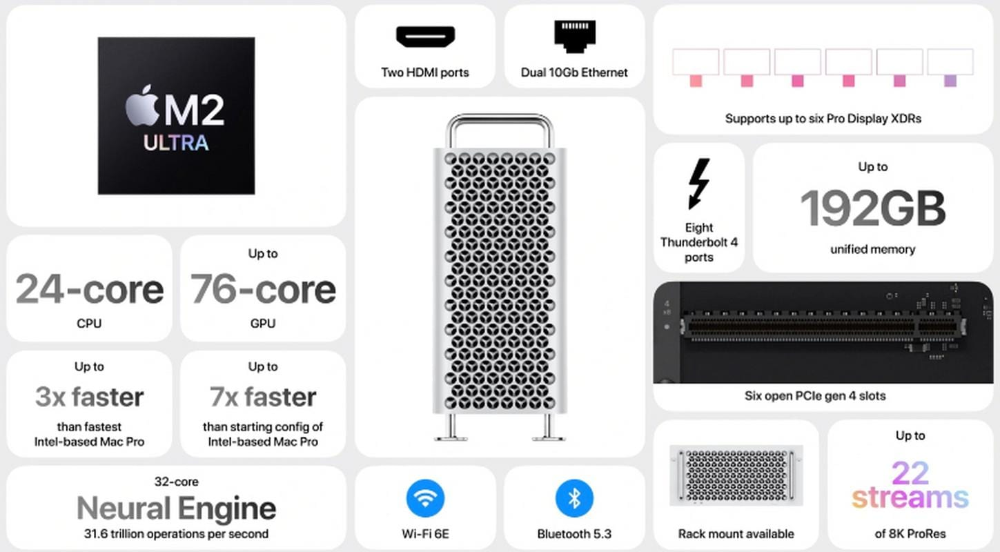

Apple M2 Ultra

由两颗 M2 Max 通过 UltraFusion 拼接而成的怪兽级 SoC，24 核 CPU、最高 76 核 GPU、192GB 统一内存，Mac Studio/Mac Pro 的性能心脏。
客观评测
M2 Ultra 通过 UltraFusion 将两颗 M2 Max 无缝拼接，24 核 CPU 多核性能与顶级桌面处理器相当，76 核 GPU 可直接调用最多 192GB 统一内存，突破消费级显卡的显存上限。800GB/s 带宽与双 ProRes 引擎让 8K 视频工作流异常流畅。台积电 5nm 带来出色每瓦性能，整机满载功耗仅相当于一台中端游戏主机。缺点是售价高昂，且组件焊死无法后期升级。
主观点评
用 M2 Ultra 的感受是“安静得不像旗舰”。剪 8K 时间线不卡、导出快到离谱，风扇却基本不转，这种体验在 x86 工作站上难以想象。192GB 统一内存跑本地大模型时更是降维打击，显存墙彻底消失。当然，钱包的感受同样深刻：每加一档内存都要付出真金白银，且永远没有“以后再加内存”这回事。它适合把时间当钱的创作者，不适合爱折腾硬件的 DIY 玩家。
优点与不足
- 192GB 统一内存可让 GPU 直接调用，大模型与超大素材轻松处理
- 媒体引擎对 ProRes 视频剪辑导出加速显著
- 性能强悍却安静低功耗，Mac Studio 满载也几乎无声
- 价格昂贵，且内存硬盘选配溢价高
- 平台封闭，无法升级硬件或加装独立显卡
参数规格
| 核心/线程 | 24 核 CPU：16 性能核 + 8 能效核 |
|---|---|
| GPU | 最高 76 核 GPU，支持硬件光线追踪之外的网格着色等特性 |
| 神经引擎 | 32 核 Neural Engine |
| 统一内存 | 64GB / 128GB / 192GB LPDDR5 |
| 内存带宽 | 800GB/s |
| 制程 | 台积电第二代 5nm |
| 晶体管 | 1340 亿颗 |
| 互连 | UltraFusion 2.5D 封装，芯片间带宽 2.5TB/s |
| 媒体引擎 | 双视频编解码引擎 + 双 ProRes 加速引擎 |
| 显示输出 | 支持同时驱动多台 6K/8K 显示器（依机型） |
| AI 算力 | 合计约 31 TOPS 以上（CPU+GPU+NPU 统计口径不一） |
| 搭载机型 | Mac Studio（2023）、Mac Pro（2023） |